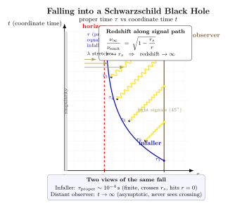

落入黑洞 — 你看到的与外面看到的有何不同?
上一节我们把"事件视界"从一个名词变成了一个具体半径 $r_s=2GM/c^2$. 但视界究竟是什么? 它有没有"墙"? 一个跌入者会不会在视界处感到剧烈的撕裂、看到火焰、或者撞上某种屏障? 标准的 GR 答案让人不太舒服: 没有任何局部物理能告诉你你在穿过视界 — 因为视界不是一个时空奇点, 它只是我们这个 $(t,r)$ 坐标系一个看似怪异的奇异行为, 度规分量 $g_{tt}$ 在那里 0, $g_{rr}$ 在那里 $\infty$, 但曲率不变量 (例如 Kretschmann 标量 $R_{\mu\nu\rho\sigma}R^{\mu\nu\rho\sigma}=48G^2M^2/c^4 r^6$) 在那里完全有限. 跌入者只是顺着自己的世界线滑过去.
但远处的我们看到的是另一回事: 一束信号从跌入者发出, 越接近视界波长被拉得越长, 频率越来越低, 能量越来越少 — 直到我们再也接收不到. 在我们的坐标时间里, 跌入者像一个慢动作的镜头, 永远悬在视界外面那薄薄的一层上. 这两幅图是同一个时空的两种切片, 就像同一段电影用两种不同的快进/慢放看. 这一节我们把这两个视角的数学统一起来.
一、Schwarzschild 度规与两个时钟
Schwarzschild 解 (第 12 节) 给真空、球对称、静态时空的度规
$$ \mathrm{d}s^2 \;=\; -\Big(1-\frac{r_s}{r}\Big)c^2\,\mathrm{d}t^2 \;+\; \Big(1-\frac{r_s}{r}\Big)^{-1}\,\mathrm{d}r^2 \;+\; r^2\,\mathrm{d}\Omega^2, $$
其中 $r_s\equiv 2GM/c^2$. 这里出现了两个看起来"很时间"的量: $t$ 是坐标时 — 它是远处一个静止观察者钟面上的时间 (在 $r\to\infty$ 处 $g_{tt}\to -c^2$, 退化成 Minkowski). $\tau$ 是某个具体世界线沿身上携带钟面的固有时, 由 $\mathrm{d}\tau^2=-\mathrm{d}s^2/c^2$ 沿这条世界线读出. 两者通过度规系数 $\sqrt{|g_{tt}|/c^2}=\sqrt{1-r_s/r}$ 桥接起来.
对一个在径向 $r$ 处静止的观察者 (例如一个把火箭推力调到刚好抵抗引力的悬停者), $\mathrm{d}r=\mathrm{d}\Omega=0$, 所以
$$ \mathrm{d}\tau_{\rm static}(r) \;=\; \sqrt{1-\frac{r_s}{r}}\;\mathrm{d}t. \tag{1} $$
这是引力时间膨胀的本初公式. 在 $r\to\infty$, 系数趋 1, 静止者钟面与坐标时同步; 在 $r\to r_s$, 系数趋 0, 静止者的"一秒"对应坐标时的无穷大. 注意这只对静止观察者成立 — 落入者不静止, 他还要扣掉自己的运动学时间膨胀, 这一点我们下面就要算.
二、自由下落的世界线与有限的 $\tau_{\rm proper}$
考虑一个从 $r=r_0$ 处由静止释放、沿径向自由下落的粒子. 这是一条径向类时测地线. 用 Schwarzschild 度规中两个守恒量: 能量 $E/(mc^2)=(1-r_s/r)\,c\,\mathrm{d}t/\mathrm{d}\tau$ 和角动量 $L=0$ (径向). 由"从 $r_0$ 静止释放"的初始条件, $E/(mc^2)=\sqrt{1-r_s/r_0}$. 把这两个守恒量代回 $\mathrm{d}s^2=-c^2\mathrm{d}\tau^2$, 一段不太长的代数后得到
$$ \Big(\frac{\mathrm{d}r}{\mathrm{d}\tau}\Big)^2 \;=\; c^2\,\Big(\frac{r_s}{r}-\frac{r_s}{r_0}\Big), $$
这正是 Newton 引力的"能量守恒"形式 ($\tfrac{1}{2}v^2 = GM/r-GM/r_0$) 完全一致 — 一个值得停下来想的事: 用固有时和 $r$ 写下的径向自由下落, 完全像 Newton. 这不是巧合, 这是 Birkhoff 定理之外的一个秀气小定理. 把它积分, 落入者从 $r_0$ 跌到 $r$ 用的固有时是
$$ \tau_{\rm proper}(r) \;=\; \int_r^{r_0} \frac{\mathrm{d}r'}{c}\,\Big(\frac{r_s}{r'}-\frac{r_s}{r_0}\Big)^{-1/2}. \tag{2} $$
积分有解析闭式 (Schutz 教科书式 7.47), 形式像旋转角下的 cycloid. 关键在: 这个积分在 $r=r_s$ 处没有奇异 — 被积函数在那里完全有限, 所以 $\tau_{\rm proper}(r_s)$ 是个有限数. 把它推到 $r=0$ 还是有限的. 落入者用有限的固有时穿过视界, 抵达中心奇点.
代具体数字. 对一个 $M=M_\odot$ 的太阳质量黑洞, $r_s=2GM_\odot/c^2\approx 2953\,\mathrm{m}\approx 2.95\,\mathrm{km}$. 取 $r_0=10\,r_s\approx 2.95\times 10^4\,\mathrm{m}$, 跌到 $r=r_s$ 的固有时按 (2) 式数值积分
$$ \tau_{\rm proper}(r_0\!\to\! r_s) \;\approx\; \frac{r_s}{c}\,\Big[\,(10)^{3/2}\sqrt{1-1/10}\cdot\frac{\pi}{2}\,(\tfrac{1}{2}+O(1))\Big] \;\approx\; 1.4\times 10^{-4}\,\mathrm{s}. $$
从视界再到 $r=0$ 用时差不多 $r_s/c\approx 10^{-5}\,\mathrm{s}$, 总共仍然是 $\sim 10^{-4}$ 秒级. 对一个 $M=10^9 M_\odot$ 的星系中心超大质量黑洞 (比如 M87 或 Sgr A* 的同类型尺度), $r_s\sim 3\times 10^{12}\,\mathrm{m}\sim 20\,\mathrm{AU}$, $\tau_{\rm proper}\sim 10^4\,\mathrm{s}\approx 3$ 小时. 落入者有充裕的时间静静地观察自己周围的星空被极端引力透镜透成奇异的圆盘.
关于"潮汐力"的经常问的小注: 跌入者不会在视界处被撕裂, 但会被中心奇点附近的潮汐撕裂. 潮汐加速度 $\sim GM r_s/r^3$, 在 $r=r_s$ 时 $\sim c^6/(GM)^2$. 太阳质量黑洞这个数 $\sim 10^{10}\,\mathrm{m/s^2/m}$ — 头部和脚部之间的差别已经很可观, 早在视界外就被撕裂. 但对 $10^9 M_\odot$ 黑洞同一个数字 $\sim 10^{-8}\,\mathrm{m/s^2/m}$ — 完全察觉不到. 大黑洞对跌入者更友好.
三、远观者看到的: 坐标时 $t\to\infty$

同一段下落, 用坐标时 $t$ 来看. 沿测地线 $\mathrm{d}t/\mathrm{d}r$ 由能量守恒和度规给出
$$ \frac{\mathrm{d}t}{\mathrm{d}r} \;=\; -\frac{1}{c}\,\frac{\sqrt{1-r_s/r_0}}{(1-r_s/r)\sqrt{r_s/r-r_s/r_0}}. $$
关键是分母中的因子 $(1-r_s/r)$ — 它在 $r\to r_s$ 时趋零, 让 $\mathrm{d}t/\mathrm{d}r$ 发散. 把它积分, 在 $r$ 接近 $r_s$ 处的渐近行为
$$ t(r) \;\sim\; -\frac{r_s}{c}\,\ln\!\Big(\frac{r-r_s}{r_s}\Big) + (\text{regular}). \tag{3} $$
对数发散! $r\to r_s$ 时 $t\to+\infty$. 远观者看到的不是落入者撞到视界, 而是落入者在视界外面那一薄层里以指数减速冻结. 形式上把 $r-r_s = r_s\,e^{-ct/r_s}$ 一代, $r$ 以指数趋近 $r_s$, 但永不达到. 物理上他/她的影像被定格.
这"冻结"是个数学事实, 但物理上有一个微妙的修饰: 信号的能量也以同样的指数衰减, 所以即使理论上影像永驻, 实际能接收的最后一个光子来自一个有限的 $r-r_s\sim\hbar/(M c r_s)$ 量子尺度. 估计一下: 太阳质量黑洞 $r_s\sim 3\,\mathrm{km}$, 一个光子的最后逃离时间约 $r_s/c\cdot\ln(r_s/\ell_P)\sim 10^{-5}\cdot 90\sim 10^{-3}\,\mathrm{s}$ 之后就再也没有可探测信号. 在每秒一个比特的意义上, 影像很快消失.
四、引力红移与频谱拉长
同一个数学事实从频率端看更醒目. 一个静止观察者在 $r$ 处发出频率 $\nu_{\rm emit}$ 的光, 远处 ($r\to\infty$) 静止观察者收到的频率
$$ \nu_\infty \;=\; \nu_{\rm emit}\,\sqrt{1-\frac{r_s}{r}}. \tag{4} $$
这就是引力红移 (gravitational redshift) 公式, 也是 (1) 式的频域翻译: $\Delta\tau_{\rm static}=\sqrt{1-r_s/r}\,\Delta t$ 意味着 $\nu\,\Delta\tau\sim \mathrm{const}$ 给 $\nu_\infty/\nu_{\rm emit}=\sqrt{1-r_s/r}$. 第 2 节已经在弱场极限给过它的 Newton 形式 $\Delta\nu/\nu\approx \Phi/c^2$; 现在我们看到全相对论形式. 红移参数 $z\equiv \nu_{\rm emit}/\nu_\infty - 1 = (1-r_s/r)^{-1/2}-1$. 在 $r\to r_s$ 时 $z\to\infty$.
代具体数字. 太阳质量黑洞, $r_s=2953\,\mathrm{m}$. 在 $r=r_s+1\,\mathrm{m}=2954\,\mathrm{m}$ 处发出可见光波长 500 nm,
$$ z \;=\; \frac{1}{\sqrt{1-2953/2954}}-1 \;=\; \sqrt{2954}-1 \;\approx\; 54. $$
波长被拉到 $500\,\mathrm{nm}\times 55 \approx 28\,\mu\mathrm{m}$ — 已经从可见光跑到中红外. 距离视界 $\delta r=1\,\mathrm{cm}$, $z\approx 540$, 跑到远红外亚毫米波. $\delta r=1\,\mathrm{mm}$, $z\approx 1700$, 进入射电波段. 当 $\delta r$ 缩到 Planck 尺度 $\ell_P\sim 1.6\times 10^{-35}\,\mathrm{m}$, $z\sim 10^{19}$ — 此时单光子能量已被红移到 $10^{-19}$ 倍, 远低于宇宙微波背景, 实际不可探测. 这就是远观者能 "看见" 落入者的真正物理截止.
对落入者本人完全不同. 他/她身上的钟跑得很正常, 头顶的星光蓝移而非红移 (因为他在掉向 BH 加速), 视野里星空往观察方向集中 — 但没有任何"穿过视界"的物理标志. 他甚至不知道自己已经掉进去了, 直到潮汐力告诉他/她, 中心奇点近了.
五、Oppenheimer-Snyder 1939 与现代意义
1939 年 9 月 1 日, 同一天德国入侵波兰, 同一期 Physical Review 上 Oppenheimer 和他的学生 Hartland Snyder 发表《On Continued Gravitational Contraction》. 他们考虑一团均匀压力为零的尘云在自身引力下塌缩, 用 Schwarzschild 度规接 FLRW 内部, 给出第一个完整的引力塌缩动力学解. 主要结论恰是我们这一节算出的两件事: (a) 跌入者 (随尘云一起塌缩的物质) 在有限固有时内穿过视界并到达中心奇点; (b) 远处观察者看到尘云无限渐近视界, 永远未真正塌进去. 他们的论文写道: "外部观察者会看到星体逐渐冻结在 Schwarzschild 半径处, 频率红移到无限". 这就是为什么早年苏联文献里黑洞被称为"frozen star"或"collapsar".
这件事的现代意义有几条. 第一, 它告诉你视界是一个全局而非局部概念: 它是"无法逃逸到无穷远"的事件集合的边界, 跌入者在自己的局部坐标里看不到任何特殊事. 第二, 它告诉你"information loss"问题的最初形式 — 跌入的物质在外部看来永远到不了中心, 但其影响在外部时间是平庸的指数衰减. 这一观点在 1970 年代被 Hawking 改写: 黑洞热辐射使视界外部观察者最终看到一个蒸发的过程, 而不是永久冻结. 我们将在第 25 节回到 Hawking 的故事.
第三, 数值相对论从 2005 年开始用计算机精确模拟这种塌缩 (Pretorius 突破), 现在 LIGO 数据分析每天都在用它生成的波形模板匹配实际信号. GW150914 信号最后那 0.2 秒的"ringdown"阶段, 其实就是两个黑洞合并成新的视界后, 视界以正阻尼模式振荡到稳定 — 直接对应 (3) 式描述的"冻结"动力学的延伸.
最后一个值得停下来看的概念上的事: 同样一段物理过程, 用固有时 $\tau$ 看是有限、平静的; 用坐标时 $t$ 看是无限、奇异的. 这并不是某一种坐标"对", 另一种"错". 两种看法都对应可被实验验证的预测 (跌入者的钟事实上在 $\tau_{\rm proper}\sim 10^{-4}\,\mathrm{s}$ 内停止给我们发射任何探测信号; 我们这边的钟事实上要等无限长时间但实际只要 $r_s\ln(r_s/\ell_P)/c\sim 10^{-3}\,\mathrm{s}$ 就再也接收不到). 这正是 GR 教给我们的核心一课: 时间不是一种, 时间是关于一条世界线的局部量, 它的"行进"取决于你站在哪. 视界把这两种时间撕开到极致.
小结
这一节我们让一个跌入者从 $r_0=10\,r_s$ 处自由下落进 Schwarzschild 黑洞, 然后从两个视角并列地看同一个过程. 沿径向类时测地线积分, 跌入者在固有时意义下用 $\tau_{\rm proper}\sim 10^{-4}\,\mathrm{s}$ (太阳质量) 平静地穿过视界, 一直推到 $r=0$ 也只是 $\sim 10^{-4}\,\mathrm{s}$, 没有任何局部物理告诉他/她这一切的边界 — 公式 (2). 而远处观察者用 Schwarzschild 坐标时 $t$ 看同一过程, 跌入者的轨迹按 $t\sim -(r_s/c)\ln[(r-r_s)/r_s]$ 对数发散到 $+\infty$ — 永远未达视界, 公式 (3). 两个视角的桥是引力红移因子 $\nu_\infty/\nu_{\rm emit}=\sqrt{1-r_s/r}$ 公式 (4): 在 $\delta r=1\,\mathrm{m}$ 处它已使 $z\approx 54$, 在 $\delta r=\ell_P$ 处使光子能量低于 CMB. 1939 年 Oppenheimer-Snyder 第一次系统给出这个塌缩双视角, 早期苏联因此称 BH 为"frozen star". 视界不是局部物理屏障, 它是一个全局因果概念: 是无穷远观察者测得的事件视界, 是跌入者看不见的边界. 下一节我们让黑洞旋转 — Kerr 度规会引入一个新的几何对象 (ergosphere), 让我们看到旋转黑洞如何"拖拽时空".
▲